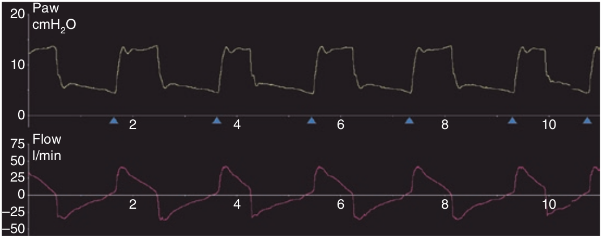

اگر مدت زمان صعود فشار خیلی کوتاه باشد و امپدانس سیستم تنفسی زیاد باشد، فشار راه هوائی در شروع دم ممکن است از حد تنظیم شده بیشتر شود و یک جهش فشاری ایجاد کند. اگر این جهش فشاری به اندازه کافی زیاد باشد ممکن است همزمان سبب جهش شدت جریانی هم بشود و در نتیجه باعث سیکل زودرس گردد. به علاوه جهش شدت جریانی ممکن است سبب رفلکس خاتمه دهنده دم (مربوط یه فلو) در بیمار بشود و در نتیجه بیمار تلاشهای کوتاه و سطحی پشت سرهم دمی پیدا کند. کاهش مدت زمان صعود دمی این جهش فشاری و شدت جریانی را از بین می برد.

در مورد جهش فشاری ابتدای دم کدام جمله زیر غلط است؟
۱ - بر روی منحنی فشار ظاهر میشود
۲ - ممکن است در منحنی شدت جریان نیز دیده شود
۳ - علت آن میل زیاد دمی می باشد
۴ - همراه با کوتاهی مدت زمان صعود فشار است
۵ - با کمپلیانس کم همراه است